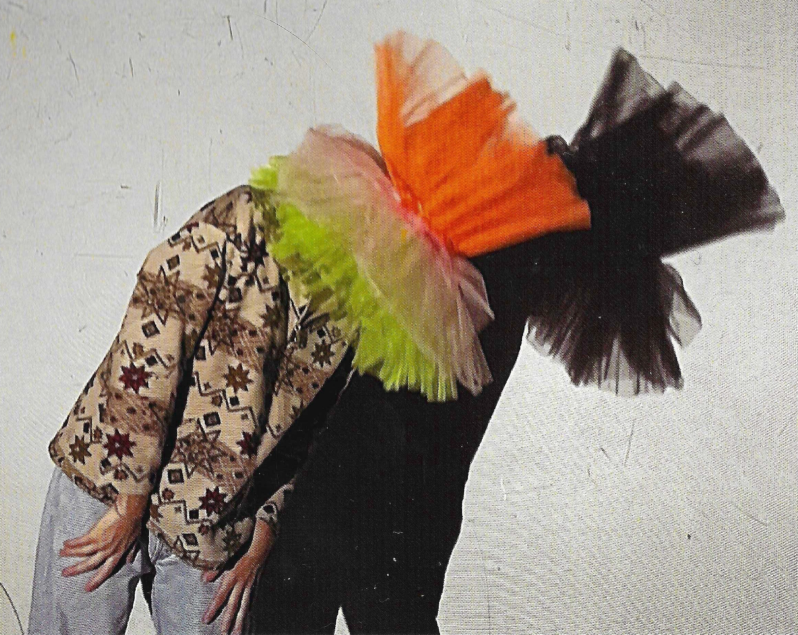

La Plasta es un colectivo artístico-educativo interesado en la dimensión experimental, corporal y plástica de las artes como herramienta educativa. Nuestros proyectos buscan ofrecer experiencias de aprendizaje que sitúean la exploración plástica y sensorial en el centro, fomentando el contacto directo con los materiales y dotando a los participantes de autonomía para experimentar con ellos. Trabajamos desde la creación de instalaciones artísticas de juego, propuestas escénicas sensoriales y mediaciones en espacios expositivos dirigidas a la infancia.
La Plasta nace del deseo de hacer estallar los límites de lo establecido, desafiando las formas rígidas y poco flexibles, de empujar hasta que algo ceda. "¡Plasta, eres un plasta!", decimos, como quien juega con un globo a punto de reventar, porque confiamos en que solo jugando en ese límite, insistiendo un poco más, podremos encontrar aquello que andábamos buscando. Nosotras, blandas y maleables como esa masilla que se acumula bajo las uñas, nos adaptamos, nos deformamos y exploramos nuestras propias transformaciones. Pegajosas a veces, difíciles de encajar. Creemos en un aprendizaje que pasa por los cuerpos que mutan y por la experiencia directa, por quienes osan meter las manos en la masa y tocar aquello que todavía no sabemos nombrar.